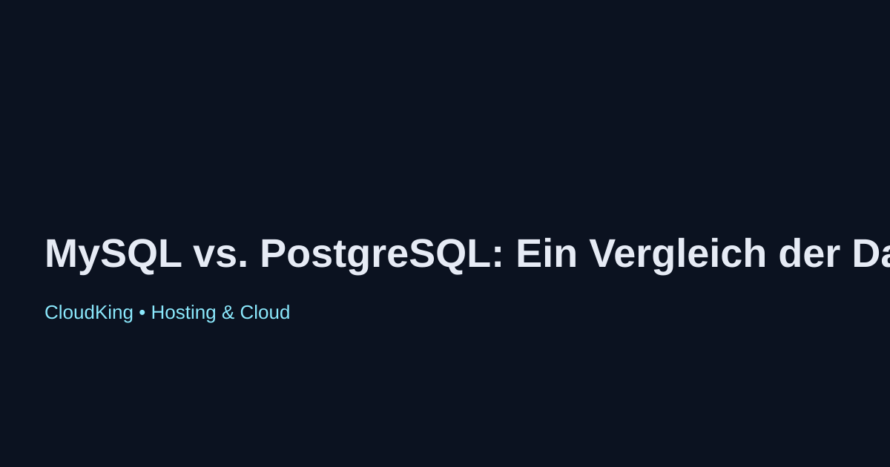

MySQL vs. PostgreSQL: Ein Vergleich der beiden führenden Datenbanken
MySQL und PostgreSQL sind zwei der am weitesten verbreiteten relationalen Datenbankmanagementsysteme (RDBMS). Beide Systeme haben ihre eigenen Stärken und Schwächen, die sie für unterschiedliche Anwendungsfälle geeignet machen.
1. Einführung
MySQL wurde in den 1990er Jahren entwickelt und ist bekannt für seine Einfachheit und Geschwindigkeit. PostgreSQL hingegen ist ein objekt-relationales Datenbankmanagementsystem, das für seine erweiterten Funktionen und Flexibilität geschätzt wird.
2. Performance
MySQL ist in vielen Lese-intensiven Anwendungen schneller, während PostgreSQL bei komplexen Abfragen und großen Datenmengen besser abschneidet. Die Performance hängt stark von der spezifischen Anwendung und den verwendeten Daten ab.
3. Features
PostgreSQL bietet erweiterte Funktionen wie Unterstützung für JSON-Daten, benutzerdefinierte Datentypen und erweiterte Indizierungsmöglichkeiten. MySQL hingegen bietet eine einfachere Handhabung und ist oft die bevorzugte Wahl für Webanwendungen.
4. Community und Support
Beide Datenbanken haben große und aktive Gemeinschaften. MySQL wird von Oracle unterstützt, während PostgreSQL von einer unabhängigen Community entwickelt wird, was zu unterschiedlichen Ansätzen in der Weiterentwicklung führt.
5. Fazit
Die Wahl zwischen MySQL und PostgreSQL hängt von den spezifischen Anforderungen Ihres Projekts ab. MySQL eignet sich hervorragend für einfache, leistungsstarke Anwendungen, während PostgreSQL für komplexe, datenintensive Anwendungen besser geeignet ist.